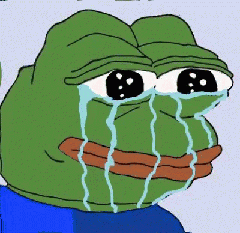

Description: Hello, this is me. My name is Ivy Katrina G. Estrella.

Description: The picture captures the familiar sight of our classroom at PUPSMB, with rows of desks and a whiteboard filled with equations and diagrams. As I gaze at it, fond memories of countless coding sessions come flooding back, reminding me of the excitement and satisfaction I find in the world of programming. The picture serves as a visual reminder of the countless hours spent honing my skills and the endless possibilities that lie ahead in my coding journey.
Description: A minimalist illustration of a cityscape at sunset.
Description: The allure of traveling and exploring new destinations fills me with excitement and anticipation. I dream of embarking on thrilling adventures, immersing myself in different cultures, and creating lifelong memories. Saving up for future travel experiences motivates me to work hard and plan meticulously for the day when I can finally embark on my dream journeys.
Description: A funny animated GIF showing a dancing cartoon character.
Description: I find great amusement and entertainment in browsing and sharing memes. The humor and relatability of memes never fail to brighten my day and put a smile on my face. They provide a lighthearted escape and a way to connect with others through shared humor.
Description: Playing drums is my passion and favorite hobby. The rhythmic beats and energetic fills allow me to express myself and release my creativity. Whether I'm jamming with a band or simply practicing alone, the joy and satisfaction I derive from playing the drums are unparalleled.

Description: I enjoy playing games like Mobile Legends and Fortnite for their fast-paced action and strategic gameplay . The thrill of competing against other players and achieving victory keeps me hooked for hours. These games provide opportunities for personal growth and improvement, as well as a chance to connect with gamers worldwide. The diverse roster of heroes in Mobile Legends and the dynamic building mechanics in Fortnite add depth to the gameplay.
Go Back to Homepage About Me